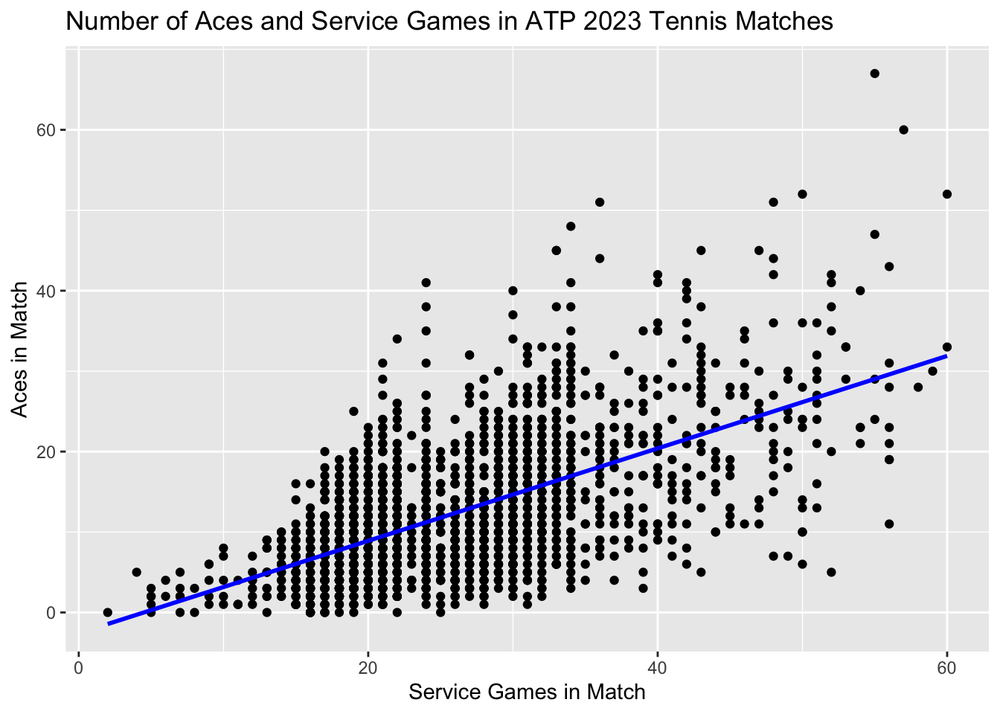

Linear Regression with Categorical Variables and ANOVA: Ace Rates in Tennis by Surface
ANOVA
Tennis
Using tennis to teach ANOVA and linear regression with categorical variables
Welcome
Please watch this intro video from tennis analyst Dr. Stephanie Kovalchik to learn about the questions we’ll be investigating today!
Background
This lesson is going to investigate whether ace rates differ across different surfaces in tennis. We will begin by exploring the data and conducting some descriptive analyses and visualizations. Then we will answer our question using linear regression and dummy variables for categorical data.
And, in the process, we will learn that analysis of variance (ANOVA) - commonly used to compare means of a continuous variable across three or more groups - is just a special case of linear regression!
Tennis Basics
If you are not familiar with tennis, consider watching this 4-minute introductory video.
In a basic singles match, two players face off against each other on either side of the court, hitting a tennis ball back and forth.
A single tennis match is typically split into either 3 or 5 sets, and the winner of a majority of the sets wins the match.
Each set is split into games (or service games) - a player must win 6 games and at least 2 more than an opponent or win a tiebreak game to win the set.
To win a game a player must score at least 4 points and at least 2 more than their opponent.
Each point starts off with a player serving the ball to another by tossing it into the air and hitting it with their racket. The opposing player then tries to return it back to the server’s side of the court, and play continues like this until one player fails to legally return the ball. The other player scores a point.
The player who serves switches each game, hence the term “service game.”
Surface
In tennis, the surface refers to the type of court on which the game is played. There are three types of surfaces in professional tennis:
Clay: Clay courts are made of crushed brick, shale, or stone, and they have a slower pace compared to grass courts. The ball tends to bounce higher on clay, making it favorable for baseline rallies. The French Open is played on clay courts.
Grass: Grass courts are known for their fast and low-bouncing nature. Wimbledon, one of the most prestigious tennis tournaments, is played on grass courts.
Hard courts: Hard courts are typically made of asphalt or concrete covered with a top layer of synthetic materials. They offer a medium-paced game and are the most common type of court. The US Open and the Australian Open are played on hard courts.
Aces
An ace occurs when a player serves the ball and the opponent fails to touch it with their racket, winning an immediate point for the server. Aces are considered a significant achievement for a server.
Ace rate, defined as the number of aces per service game, will be our main outcome. We will create it below.
Data Exploration and Descriptive Analysis
Below is the data from all 2023 Association of Tennis Professionals (ATP) tour-level main draw matches. This is the top-tier men’s tennis tour.
The original data was sourced from a Github repository by Jeff Sackmann and Tennis Abstract: https://github.com/JeffSackmann/tennis_atp. Its formatting has been modified somewhat for this tutorial.
Let’s begin by exploring the data. The data is stored in a table called match2023_df.
# Print the (first 1000 rows of) the data
match2023_df
# Get a summary of the data
summary(match2023_df)Given that each row represents a match, based on the previous terminology, can you guess what each of these columns represents?
Calculate Ace Rate
Remember what we said above about simply looking at the number of aces in a match being insufficient? It is easy to get more aces if the match is longer (that is, there are more service games). We can look at the data to verify our hypothesis:
ggplot(match2023_df, aes(x = total_ServiceGames, y = total_aces)) +
geom_point() +
geom_smooth(method = "lm", se = FALSE, color = "blue") +
labs(x = "Service Games in Match", y = "Aces in Match") +
ggtitle("Association Between Number of Aces and Service Games in Tennis Matches")There indeed is a positive association between winner’s number of ace and winner’s service games.
Since some surfaces lend themselves to longer matches than others we need to adjust for match length so that any differences we see are more likely due to the surfaces themselves rather than the fact that longer matches are played on them.
To do this we calculate ace rate, which we define as the number of aces divided by the number of service games in a match.
\[ace\_rate = \frac{total\_aces}{total\_ServiceGame}\]
Here is some code to create that variable:
match2023_df <- match2023_df %>%
mutate(ace_rate = total_aces/total_ServiceGames)
# Look at the first 6 rows of the data with the new variable
head(match2023_df)Ideally we would have used the number of aces per serve, because if the number of serves per service game differs by surface that could explain any differences we observe in our measure of ace rate. For a simple if unrealistic example, say there are 10 serves per service game on clay versus 20 serves per service game on hard court and grass. Even if exactly 20% of serves are aces on each surface, we would observe an ace rate per service game of 2.0 for clay and 4.0 for hard court and grass. This difference would appear even though the chance of any given serve being an ace doesn’t vary by surface.
Unfortunately our data does not have the number of serves so we will have to continue with this limitation.
Ace Rate by Surface
We can finally look into how aces vary across the three types of tennis surfaces. We should begin by investigating the distribution of ace rate in matches on each type of surface. A good place to start is with boxplots, which the code below will create for us:
# Get average overall ace rate
mean_acerate <- mean(match2023_df$ace_rate, na.rm = TRUE)
# Create boxplots with overall mean ace rate as red line
ggplot(match2023_df, aes(x = surface, y = ace_rate)) +
geom_boxplot() +
labs(title = "Ace Rate by Surface Type",
x = "Surface Type",
y = "Ace Rate",
caption = "Red line is overall mean ace rate across all surfaces.") +
geom_hline(yintercept = mean_acerate, linetype = "dashed", color = "red")+
theme_minimal()+
scale_y_continuous(limits = c(0, 0.75), breaks = seq(0, 0.75, by = 0.25))Let’s now calculate the three means and medians for each surface to further show the difference.
match2023_df %>%
group_by(surface) %>%
summarise(
Mean_ace_Rate = mean(ace_rate, na.rm = TRUE),
Median_ace_Rate = median(ace_rate, na.rm = TRUE)
)Ace Rate vs. Surface Analysis
To more formally investigate the association between ace rate and surface, one might first think, “We have a continuous variable (ace rate) and a three-level categorical variable (Surface: Grass, Hard, Clay), so we should use Analysis of Variance (ANOVA)!”
But we will first show you to how to do the same thing using linear regression, and then demonstrate how this is identical to ANOVA.
Analyzing Association Using Linear Regression
Often linear regression is first introduced using one continuous independent variable and a continuous outcome. Consider a simple model relating the number of aces to the number of service games in a match using a straight line:
\[Aces=β0 + β1*ServiceGames\]
The blue line below illustrates the regression line from this equation:
`geom_smooth()` using formula = 'y ~ x'
Here, β1 is the slope of the line: the average increase in the number of aces for a 1-unit increase in ServiceGames. In our data, that is approximately 0.6 more aces for each additional 1 service game.
β0 is the “intercept”, or the average value of the outcome (aces) when the independent variables are zero (that is, for a match with ServiceGames = 0). This does not have a useful real-world interpretation, but it will be useful for our surface model below.
So, how can we include surface - a categorical independent variable - in the equation instead?
Dummy Variable for Surface
The answer is to use dummy variables. These require transforming a categorical variable with K levels (for surface, this is 3) into K-1 (in our case, 2) variables that each take on the value 0 or 1.
We will create two new variables: Hard and Clay. We define Hard as 1 if the match is on hard court, and 0 otherwise. Clay is defined similarly. Thus we have:
When the surface is Hard, Hard = 1, Clay = 0
When the surface is Clay, Hard = 0, Clay = 1
When the surface is Grass, Hard = 0, Clay = 0
Notice although we did not include an explicit variable for Grass, we did not need to since grass surfaces are defined as the absence of a hard court or clay surface. This group - the one defined by all dummy variables being 0 - is called the reference group. Why this works will become apparent soon.
Here is the code for creating these variables.
match2023_df$Hard <- ifelse(match2023_df$surface == "Hard", 1, 0)
match2023_df$Clay <- ifelse(match2023_df$surface == "Clay", 1, 0)
head(match2023_df)Interpreting Dummy Variables in Linear Regression
We can write these two variables, Hard and Clay, in a linear regression equation like so:
\[AceRate=β0 + β1*Hard + β2*Clay\]
Remember what we learned from the simple linear regression \[Aces=β0 + β1*ServiceGames\]
β1 represented the average change in aces for a 1-unit increase in ServiceGames (that is, the slope of a straight line through a scatterplot of the data). β0 represented the average aces when ServiceGames = 0.
Dummy variables work somewhat similarly.
Interpreting β0
β0 should be the average of our dependent variable - ace rate - when all the independent variables are 0. Look back above at our variable definitions. What sort of Surface does Hard = 0 and Clay = 0 correspond to? Then, ask yourself…
We could write this mathematically (ignoring our error term) as \[AceRate(Grass)=β0 + β1*0 + β2*0 = β0\]
Interpreting β1
To figure out how we interpret β1, let’s start with a slightly different question: how can we get the average ace rate on a hard court surface? Let’s look at our equation:
\[AceRate=β0 + β1*Hard + β2*Clay\]
For a hard court surface, \[AceRate(Hard Court)=β0 + β1*1 + β2*0 \] which simplifies to
\[AceRate(Hard Court)=β0 + β1 \]
This helps us understand what β1 means: \[AceRate(Hard Court) - AceRate(Grass) = (β0 + β1) - (β0) = β1\]
Thus, β1 is the difference in average ace rate between grass and hard court. And that’s what we’re interested in!
Note that using this equation, β1 > 0 means hard court has a higher ace rate, while β1 < 0 means hard court has a lower ace rate.
Interpreting β2
See if you can apply this logic to interpret β2. HINT: Start by defining the average ace rate for a clay court match.
Dummy Variables Show Differences Between Groups
In fact, in general dummy variables can be interpreted as the average difference in our dependent variable between two groups: one defined by the group where the dummy variable is 1, and one defined by the reference group (where all dummy variables are 0).
So in our case: β1 = difference in ace rate between hard court and grass, and β2 = difference in ace rate between clay and grass
Linear Regression Output
Let’s first look back at our table of mean ace rates for each surface type:
# A tibble: 3 × 2
surface Mean_ace_Rate
<fct> <dbl>
1 Grass 0.582
2 Hard 0.534
3 Clay 0.332Now compare that to the output from a linear regression of \[AceRate=β0 + β1*Hard + β2*Clay\]
ace_surface_lm <- lm(ace_rate ~ surface, match2023_df)
summary(ace_surface_lm)
Call:
lm(formula = ace_rate ~ surface, data = match2023_df)
Residuals:
Min 1Q Median 3Q Max
-0.58197 -0.16577 -0.01947 0.13296 1.17462
Coefficients:
Estimate Std. Error t value Pr(>|t|)
(Intercept) 0.58197 0.01257 46.31 < 2e-16 ***
surfaceHard -0.04826 0.01441 -3.35 0.000823 ***
surfaceClay -0.24953 0.01476 -16.90 < 2e-16 ***
---
Signif. codes: 0 '***' 0.001 '**' 0.01 '*' 0.05 '.' 0.1 ' ' 1
Residual standard error: 0.2262 on 2205 degrees of freedom
Multiple R-squared: 0.1771, Adjusted R-squared: 0.1763
F-statistic: 237.2 on 2 and 2205 DF, p-value: < 2.2e-16Look at the Coefficients table, the Estimate column. These are our estimates of β0, β1, and β2. Can you figure out which is which? Maybe the following questions will help:
Analyzing Association Using ANOVA
Let’s now compare these results to a “traditional” approach to comparing means across 3 or more groups: ANOVA. Here is the code to run an ANOVA of ace rates by surface types in R:
ace_surface_anova <- aov(ace_rate ~ surface, match2023_df)
anova(ace_surface_anova)The ANOVA table does not give us a lot of useful information. All it can tell us is whether the ace rates across the three surfaces are the same or different. This information is represented in the p-value for an F-test with F-statistic 237.2 and 2 and 2205 degrees of freedom. This p-value is under The Pr(>F) column: <2.2 x 10^-16. Because the p-value is <0.05, this indicates a statistically significant difference between surfaces at that threshold.
Without more work it cannot tell us which surfaces are different from which others or how different they are. The linear regression, on the other hand, gave us all of that!
Let’s do a little more work to also get p-values for pairwise comparisons between surfaces:
pairwise.t.test(match2023_df$ace_rate, match2023_df$surface, p.adj = "none")This shows statistically significant differences at the 0.05 threshold for hard court versus grass (p = 0.00082), clay versus grass (p < 2.2 x 10^-16), and clay versus hard court (p < 2.2 x 10^-16).
Comparing Outputs: ANOVA is a Linear Regression Model!
Let’s look again at our linear regression output:
ace_surface_lm <- lm(ace_rate ~ surface, match2023_df)
summary(ace_surface_lm)
Call:
lm(formula = ace_rate ~ surface, data = match2023_df)
Residuals:
Min 1Q Median 3Q Max
-0.58197 -0.16577 -0.01947 0.13296 1.17462
Coefficients:
Estimate Std. Error t value Pr(>|t|)
(Intercept) 0.58197 0.01257 46.31 < 2e-16 ***
surfaceHard -0.04826 0.01441 -3.35 0.000823 ***
surfaceClay -0.24953 0.01476 -16.90 < 2e-16 ***
---
Signif. codes: 0 '***' 0.001 '**' 0.01 '*' 0.05 '.' 0.1 ' ' 1
Residual standard error: 0.2262 on 2205 degrees of freedom
Multiple R-squared: 0.1771, Adjusted R-squared: 0.1763
F-statistic: 237.2 on 2 and 2205 DF, p-value: < 2.2e-16Look at the last line of the output: an F-statistic of 237.2 on 2 and 2205 degrees of freedom, with a p-value of <2.2 x 10^-16. Exactly what we saw in our basic ANOVA!
Then look under the Coefficients table at the surfaceHard and surfaceClay lines. These are our pairwise p-values comparing each of those groups to grass!
That is because the ANOVA and linear regression are mathematically equivalent.
ANOVA and linear regression are both linear models. They may seem different when considering conventional descriptions that emphasize ANOVA testing mean group differences across three or more groups and regression’s emphasis on estimating coefficients relating two or more variables. But they are equivalent.
Conclusion
Tennis Aces by Surface
A potential explanation for these differences is the impact of surface type on ball speed. Factors such as increased ball speed, unpredictable trajectories, or enhanced spinning torque can all contribute to a higher ace rate. Generally, the ball tends to travel at its fastest on grass surfaces, followed by hard court surfaces, and notably slower on clay surfaces. This is the same order we saw for ace rates. As the ball’s speed decreases, the likelihood of a player serving the ball and the opponent failing to return it may be lower.
Statistical Lesson
ANOVA is mathematically equivalent to a simple linear regression model with dummy variables for one categorical independent variable. But the linear regression gives you more information with less work, and it is a much more flexible method capable of handling any number of continuous and categorical independent variables. Why would you use ANOVA when you could use linear regression instead?
In fact, many statistical tests you learn in Stats 101 - t-tests, ANOVA, Wilcoxon signed-rank test, Pearson and Spearman correlation coefficients, Mann-Whitney U test, Kruskal-Wallis test, Chi Square tests, and more - are all just special cases of linear regression. We could simply teach you linear regression to accomplish the goals of all these different methods.
To delve deeper into the link between common statistical tests and linear regression models, we recommend this explanation from Jonas Lindeloev.
Extra Credit
As an optional extra credit assignment and to test your skills, try repeating the above analysis with total_ServiceGames as your dependent variable: a.) use linear regression and ANOVA to investigate the association between surface and the length of matches (defined as the number of service games), and b.) compare the outputs to demonstrate that they are equivalent but that the linear regression depicts more information about the association.